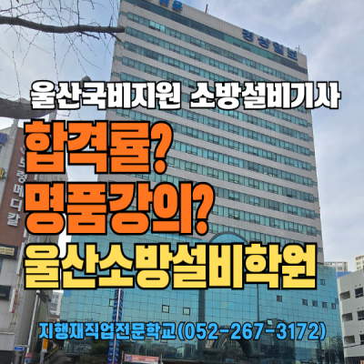

🔥 울산에서 소방설비 자격증, 왜 지금인가
산업구조가 대형화·복합화되면서 소방대상물(건축물·시설물)의 고층화, 위험물·고압가스 사용량 증가로 화재 위험이 커지고 있습니다.
소방관련 인력 수요는 해마다 늘고 있고, 특히 울산은 석유화학 산업단지·조선소·대규모 공장이 밀집한 도시라 소방 자격증 보유 전문 인력의 가치가 다른 지역보다 높습니다.
소방설비기사는 소방시설의 설계·시공·점검·유지관리를 할 수 있는 법적 자격이며, 소방안전관리자로 선임될 수 있습니다. 기사급 보유자는 특급·1급 소방안전관리 대상물에서 선임이 가능해 대형 현장 취업에 필수입니다.

📊 소방설비기사 보유자 연봉
⚖️ 소방설비기사 기계 vs 전기, 뭐가 다른가
"전기를 먼저 따야 하나, 기계를 먼저 따야 하나 -"가장 많이 받는 질문입니다.
| 항목 | 소방설비(기계)기사 | 소방설비(전기)기사 |
|---|---|---|
| 필기 과목 | 소방유체역학, 소방기계시설 구조·원리 | 소방전기일반, 소방전기시설 구조·원리 |
| 공통 과목 | 소방원론 + 소방관계법규 (2과목 공통 → 한쪽 합격 시 다른 쪽 면제 가능) | |
| 실기 과목 | 소방기계시설 설계·시공실무 (필답형 2시간 30분) | 소방전기시설 설계·시공실무 (필답형 2시간 30분) |
| 주요 학습 내용 | 스프링클러, 옥내소화전, 물분무, 포소화, 가스소화, 위험물 저장시설 | 자동화재탐지설비, 감지기 배선, 비상경보, 유도등, 비상방송 |
| 난이도 | 학습량 많음 (설비 종류 다양) 유체역학 계산 필요 | 상대적 학습량 적음, 최근 난이도 급상승 |
| 합격률 (최근 3년 평균) | 필기 약 30~40%, 실기 약 20~30% | 필기 약 35~45%, 실기 약 15~25% (2025 급락) |
| 현장 선호도 | 실무에서 더 우대(설비 범위가 넓음) | |
종합반·단과반 중 어떤 코스가 맞는지 모르겠다면?
무료 상담으로 내 코스 찾기🏫 이 지역 유일 — 위험물 + 산업안전 + 소방 종합반·단과반
지행재직업전문학교는 위험물·산업안전·소방설비를 한 곳에서 가르치는 울산 유일의 안전 3대장 특화 학원입니다.
다른 울산 국비지원 학원에서는 위험물만 따로, 산업안전만 따로 등록해야 하지만, 지행재에서는 종합반으로 3종을 연속 취득하거나, 소방설비 단과반만 골라 수강할 수 있습니다.
| 항목 | 종합반 — 안전 3대장 코스 ★추천 | 단과반 — 소방설비 집중 |
|---|---|---|
| 대상 자격 | 산업안전 + 위험물 + 소방설비 3종 연속 | 소방설비기사(기계) 또는 (전기) 택1 |
| 핵심 장점 | 3종 겹치는 출제 범위를 한 흐름으로 시간·비용 절약 |
필요한 과목만 집중 단기 합격에 유리 |
| 학습 시너지 | 소방원론·법규 ↔ 산업안전 화학설비 ↔ 위험물 성질 상호 보완 | 소방 종목 집중 반복 |
| 국비지원 | 내일배움카드 한도 내 연속 사용 | 내일배움카드 과정별 개별 신청 |
📞 종합반·단과반 중 어떤 코스가 맞는지 모르겠다면 무료 상담: 052-267-3172
울산 산업안전 교육기관 비교 — 지행재 vs 경쟁사
| 비교 항목 | 지행재직업전문학교 | 울산 T**학원 | 울산 H**원 |
|---|---|---|---|
| 소방설비과정 | 기계&전기-기사_산업기사특화 | 전기-기사_산업기사 | 산업안전 1과목 |
| 개설 과정 | 3종 종합반 + 종목별 단과반종합+단과 | 전기시공, 소방설비전기, 위험물기능사 3종 | 산업안전기사/산업기사·기사 필기·실기 특강 |
| 위험물산업기사 과정 | 운영있음 | 기능사 | 미운영 |
| 국비지원 | 내일배움카드 구직자·재직자·사업주 위탁훈련 모두 가능 | 내일배움카드 가능 | 재직자 계좌제 |
| 수업 시간대 | 오전·오후·야간 탄력 운영 | 오전반·오후반 | 과정별 상이 |
| 강사진 | 울산 제조·화학 현장 출신 실무 강사현장형 | 소방학원강사 출신 | 산업안전 분야 전문 강사 |
| 취업 연계 | 울산 기업 채용 정보 + 이력서 컨설팅 | 수강생 취업 연계 서비스 | 수강생 취업 연계 서비스 |
| 위치 | 울산 남구 무거동 | 울산 남구 옥동 | 울산 남구 신정동 |
| 연락처 | 052-267-3172 | 070-***-* | 052-***-* |
지행재만의 강점 6가지
수강생들이 지행재를 선택한 이유
""산업안전 따고 소방설비 전기까지 연속으로 수강했는데, 소방원론·법규를 이미 배운 상태라 필기가 수월했어요. 기계분야도 같은 학원에서 이어서 할 수 있어서 따로 학원 찾을 필요가 없었습니다."
— 울산 제조업체 재직자 M님, 산업안전산업기사+소방설비기사(전기+기계) 취득
"교대근무 중인데 야간반이 있어서 수강할 수 있었습니다. 기출문제 반복 학습과 실기 모의 필답 훈련 덕분에 한 번에 합격했습니다."
— 울산 석유화학 공장 재직자 J님, 소방설비기사(전기) 취득 후 소방안전관리자 선임
📅 2026년 소방설비기사 시험일정 (기계·전기 공통)
한국산업인력공단 주관, 연 3회 시행. 필기는 CBT 방식으로 시험 기간 내 원하는 날짜를 선택할 수 있습니다.
| 회차 | 필기 원서접수 | 필기 시험 | 필기 발표 | 실기 원서접수 | 실기 시험 | 최종 발표 |
|---|---|---|---|---|---|---|
| 1회 | 1.12~1.15 | 1.30~3.3 | 3.11 | 3.23~3.26 | 4.18~5.6 | 6.5 |
| 2회 | 4.20~4.23 | 5.9~5.29 | 6.10 | 6.22~6.25 | 7.18~8.5 | 9.4 |
| 3회 | 7.20~7.23 | 8.7~9.1 | 9.9 | 9.21~9.28 | 10.24~11.13 | 12.11 |
* 공단 발표 기준이며 변동 가능. 최신 일정은 Q-net에서 확인하세요.
2회차 실기 접수 전, 지금 시작하면 딱 맞습니다
개강일정 확인하기국민내일배움카드 수강료 지원 — 4단계면 끝
1인당 300만~최대 500만 원 훈련비 지원. 2026년부터 훈련장려금이 월 20만 원으로 인상, 비수도권 울산은 특별훈련수당 월 20만 원 추가 지급 가능(해당직종에 한해). 고용위기 선제대응지정시 자부담금 0원으로 실질 부담이 크게 줄어듭니다.
고용24 온라인 신청 또는 울산고용센터 방문. 약 2~3주 소요.
052-267-3172 전화 또는 홈페이지에서 개강 일정·자비부담금 확인.
고용24에서 "지행재직업전문학교" 검색 → 소방설비기사/산업기사 과정 수강 신청.
출석률 80% 이상 시 매월 장려금 지급. 성실 참여하면 자비부담금을 상쇄하고도 남습니다.
합격 전략 — 필기·실기 한 번에
📝 필기: 기출문제 반복이 핵심
소방원론·소방관계법규는 암기 위주라 기출문제 3~4회독으로 충분합니다. 기계분야의 소방유체역학, 전기분야의 소방전기일반은 계산 문제가 나오므로 기초 수학·전기 특강이 필요합니다. 지행재에서 기초 특강을 별도 제공합니다.
🔧 실기: 필답형 — "쓰는 연습"이 합격률을 가른다
소방설비기사 실기는 필답형으로 계산+서술+도면 해석이 복합 출제됩니다. 2025년 전기분야 실기 합격률이 15~18%까지 떨어진 것은 서술형 문제 비중 증가 때문입니다. 독학 합격률(29%)보다 체계적 학원 수강 합격률(38%)이 높으므로 실기 대비에 집중 투자하는 것이 효율적입니다.
❓ 자주 묻는 질문 FAQ
울산 소방설비 안전관리전문가 커리어, 지금 시작하세요
2026년 시험 일정에 맞춰 학습하려면 지금이 적기입니다.
무료 상담으로 종합반·단과반 최적 코스를 안내받으세요.